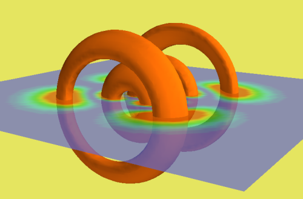

Mayavi2 is a interactive program allowing elaborate 3D plots of scientific data in Python with scipy. It is the successor of MayaVi for 3D visualization.
||<#80FF80> The information on this page is a bit old and outdated. You are invited to refer to the Mayavi2 user guide as a reference. For a quick introduction to scripting, see mlab. In recent versions of Mayavi2, the user guide can be accessed in the help menu, but the user guide for the latest version of Mayavi can also be found on line. ||
If you need more help, you are invited to ask questions on the Enthought-dev mailing list.
#!figure
#class right
## Snazzy graphics here...
.. image:: MayaVi_attachments/mayavi2.png
!Mayavi2 relies on [http://www.vtk.org VTK], and especially a python interface t
o it: [https://svn.enthought.com/enthought/wiki/TVTK TVTK].
A mayavi2 session.
!MayaVi2 can be used as an interactive program or not, as it will be presented here.
* For installation of !MayaVi2 in the enthought tool suite see the `Mayavi documentation <http://enthought.github.com/mayavi/mayavi/installation.html>`__
* Using !MayaVi2:
There are (at least) two ways to use !MayaVi2:
* [:Cookbook/MayaVi/RunningMayavi2: Running MayaVi2] on the command line.
* [:Cookbook/MayaVi/ScriptingMayavi2: Scripting MayaVi2] in Python.
* [:Cookbook/MayaVi/Examples: Scripting Examples] (all provided in !MayaVi2 svn tree):
* Using Contour Module (contour.py)
* Using Glyph Module (glyph.py)
* Using Mayavi2 without GUI (nongui.py)
* A 3D array as numerical source (numeric_source.py)
* Using Streamline Module (streamline.py)
* Using !ImagePlaneWidget Module (test.py)
* Plotting a surface from a matrix (surf_regular_mlab.py). See also [:Cookbook/MayaVi/Surf: Cookbook/MayaVi/Surf]
* [:Cookbook/MayaVi/Tips: Tips]: General tips for !MayaVi2 and around.
#!figure
#class inline
## Snazzy graphics here...
.. image:: MayaVi_attachments/mlab.png
Using the mlab module from ipython
* [:Cookbook/MayaVi/mlab: Mlab]: module allowing to drive VTK from Python to do 3D plots ala matlab.
* [:Cookbook/MayaVi/tvtk: tvtk]: Traited VTK, including iVTK
Visualization of the (5,2,1) orbital of the H-atom using an iso-surface and a semi-transparant scalar cut plane.
CategoryCookbook